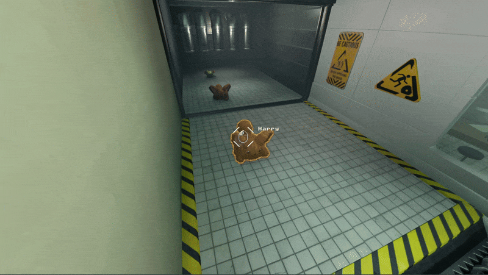
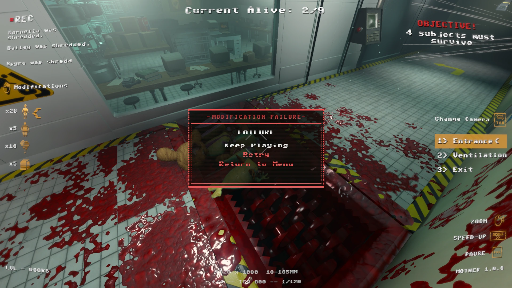
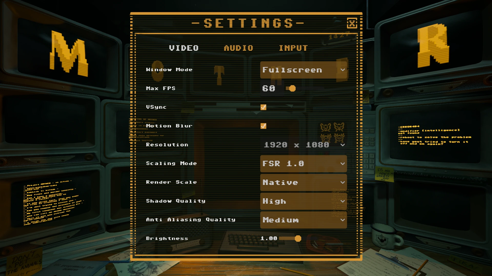

M0THER
A dark but charming puzzle game about a supercomputer guiding packs of stupid creatures through a deadly testing faciliy

Genre: Puzzle
Engine: Godot
Team Size: 10
Platform: PC
Time: 9 weeks
I Designed and implemented a custom blood system.
It features a custom particle system in order to get collision results for the particles, something which is otherwise not possible in Godot.
Upon getting a collision result, an entry is added into a dictionary which holds all the relevant information for a background thread to compute the UV position of the hit.
Getting the UV position is required to mask pixels around the hit UV position which causes the shader to render the blood texture.
An important feature for us in the team was to have persistent blood in the level, which would cause more and more blood to show for each retry.
Because of engine limitations it wasn't possible to find each mesh after reloading the level as all IDs would be re-generated.
To circumvent this issue I simply stored all the successful raycasts in a dictionary and re-raycasted them when pressing retry. This causes the game to freeze as hundreds of raycasts are done on retry in some cases.
My solution was to start a thread per mesh which allowed the operations to be massively parallelized which hugely speed up the loading times.

All of the settings as well as the settings UI functionality is implemented by me. It features many video settings as well as some for audio and input.
The system uses Godot's ConfigFile which allows for the saved values to be saved, loaded and modified across sessions via the settings menu.
When loading the settings script it tries to find the settings config file. If unsuccessful, a default one is created and used instead. This is realistically only used on first start of the game.
Something important to me was for the user to have access to a wide range of settings. These include screen mode, resolution, fps limit, VSync, motion blur, render scale and shadow quality.
Some work also went into controlling the audio volume. This is done by directly controlling FMOD VCAs. FMOD sometimes loads in slowly so handling async loading of the VCAs with scheduled retries was required

Note: this was cut because it didn't stay aligned with the vision of the project as it evolved.
I built an in-engine grid-based 3D level editor designed for fast iterations and non-destructive workflows.
The editor runs directly inside the game and integrates custom gizmos, snapping logic, undoable commands, multiselecting and object duplication.
Alongside the level editor I had to build a system for saving the level to locally. It also exports previews of the levels, which was displayed in the level-selection screen.
The most difficult part to implement was a system to undo/redo any changes made within the level editor -
It uses two separated command stacks keeping track of undo and redo histories.
Commands are stored as dictionaries containing the command type, affected nodes and an optional Variant for e.g. transforms. This made it easy to add new commands that could be be reversed.

Additionally, I made a creature modification system which allows the user to click on creatures and modify them.
The system used a switch on the selected modification and heavily relied on tweening property values to keep the system readable for other group members.
Based on the selected modification, the system would handle things such as animating the creature scale, movement speed, offset from the ground and much more-
everything required to go from cute little creature to a big cube to a balloon and back to cute little creature!
On top of that I also made the animation blend trees for both types of creatures and implemented parts of it in code, other parts were done by one of my groupmates.
I also developed a level switcher that works for all levels by keeping track of the current level and simply changing scene to the next level in the level list.
There are more areas that I worked on but all of which were quite small or simply me helping others out with their code!